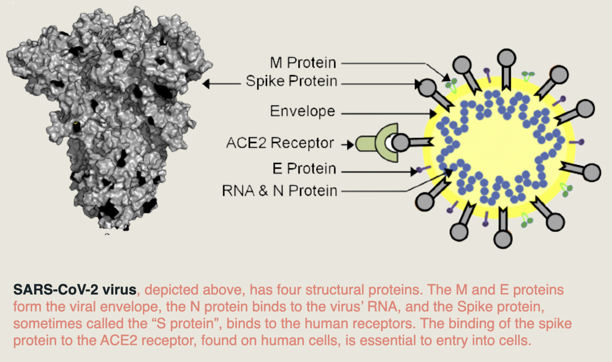

What am I looking at? Covid-19 is caused by a virus called SARS-CoV-2. This virus uses a spike protein to enter host cells and infect the body. The spike protein is shown here to the right.
Covid-19
In late 2019 there were unexplained pneumonia-like illnesses breaking out in Wuhan, China which we now know was due to the spread of a virus called severe acute respiratory syndrome coronavirus 2 (SARS-CoV-2). The spread of this virus around the world led to a global pandemic which still affects us in late 2021. At this stage of the pandemic, SARS-CoV-2 variants have grown concerning to medical professionals and researchers alike; therefore, studying variants of concern is a priority. 3D structural information can help us better understand how mutations can affect health and immunity and is the focus of this website.

Why are spike proteins so important? The spike protein is essential to SARS-CoV-2 virus function. Spike proteins are used to bind to human cell receptors, such as the ACE2 receptor, which allows the virus to gain entry into the cell. Viruses infect human cells in order to replicate since they lack the cellular machinery needed to replicate independently. After large amounts of virus replicate in a host’s body, this can cause contraction of Coronavirus disease. So, if a person has antibodies that recognize spike protein and stop entry, they would be protected from the virus. This is why the spike protein is the focus of most COVID-19 vaccines and why mutations, which may block antibody recognition, are concerning to public health.
How does the vaccine work? Antibodies can target spike proteins and block the interaction between the spike protein and human cell receptors. This blockage neutralizes the virus and prevents it from infecting human cells. If the virus cannot enter human cells, then it cannot replicate. The mRNA vaccine works by providing spike protein information to your cells that will enable your immune system to recognize spike proteins on the real virus. Therefore, your body is prepared and knows how to fight infection if exposed to the real virus. Learn more about COVID-19 vaccines.
Why are mutations in the spike protein important? Mutations can occur in the virus’ genetic code and change the structure of the spike protein. Depending on what mutations occur, these changes could affect antibody binding and influence the efficacy of immune responses. Therefore, it is important to map where these mutations are and investigate how they change spike protein and antibody binding.
What is a receptor-binding domain (RBD)? To enter cells, SARS-CoV-2 needs to first bind to cells. It does so through its RBD on the spike protein. The RBD specifically recognizes angiotensin-converting enzyme 2 (ACE2) as its receptor, and binding of the RBD to ACE2 leads to structural changes that allow SARS-CoV-2 to enter cells. Early vaccine efforts focused on blocking this binding using either inhibitors or antibody production induced by vaccines. However, the RBD is sometimes hidden (called the closed conformation), which helps the coronavirus evade the immune system. Recent research has shown that less than 20% of antibodies target the RBD domain, so vaccines targeting other sites should be investigated.
What is an N-terminal domain (NTD)? The NTD recognizes sugars on the cell surface and helps the coronavirus attach to the cell surface. Since the NTD contributes to early attachment, it can be a target for preventing and treating COVID-19. Many antibodies actually target the NTD rather than the RBD and work has been done to target antibodies to the NTD.
What is the S2 subunit? The S2 subunit consists of the rest of the spike protein and is the membrane fusion subunit. After the RBD binds the receptor, the S2 subunit’s structure changes, allowing for the coronavirus to enter the cell. About 40% of antibodies in infected patients target the S2 subunit. That, combined with the fact that the S2 subunit is less likely to have mutations than the NTD and RBD, suggests that S2-directed antibodies might be more effective against a wider array of variants, which is crucial to our management of the pandemic.
This Website and Content was created by a team at the SIP Codeathon. The members are Diya Dinesh, Alexa Salsbury, Katilin Abrantes, Anne-Sophie Fratzscher, and Wenyu Zeng.